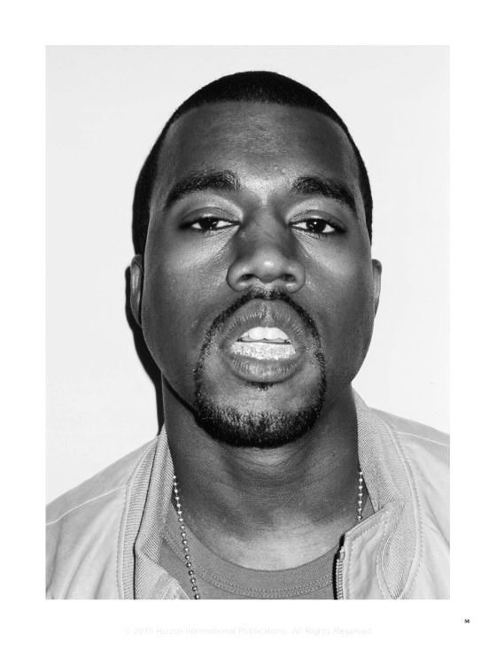

KANYE WEST
Kanye West é um artista que redefine os limites da música e da cultura. Sua trajetória mistura genialidade, controvérsia e inovação constante. Desde o início como produtor até se tornar um dos maiores nomes do hip-hop, Kanye construiu um legado único, desafiando padrões e criando novas formas de expressão.

Momentos marcantes
- O Acidente de Carro (outubro de 2002): Esse foi o momento em que a vida dele quase acabou antes mesmo de começar pra valer. Ele estava voltando de uma sessão de estúdio tarde da noite, dormiu no volante e bateu de frente com outro carro. Ele quebrou a mandíbula em três lugares. Teve que passar por uma cirurgia reconstrutiva e ficou com a boca "amarrada" com fios de metal para os ossos cicatrizarem. Em vez de descansar, ele foi pro estúdio duas semanas depois, com a boca ainda travada. Foi ali que ele gravou "Through the Wire". Se você ouvir com atenção, dá pra notar que a voz dele está um pouco "presa". O acidente deu a ele o senso de urgência que faltava. Ele sentiu que Deus o poupou por um motivo e que ele precisava provar pro mundo que era mais do que "só um produtor". Foi o combustível final para o lançamento do The College Dropout.
- A Morte da Mãe, Donda West (novembro de 2007): Se o acidente deu a ele a fome de vencer, a morte da Donda tirou o chão dele. Ela era a maior incentivadora, a melhor amiga e a pessoa que o mantinha com os pés na terra. Donda faleceu devido a complicações após uma cirurgia plástica. Kanye, de certa forma, se sentiu responsável, porque ela tinha se mudado para Los Angeles para apoiá-lo e ele sentia que a pressão da vida de celebridade contribuiu para tudo aquilo. O som mudou radicalmente. Ele largou o rap ostentação e os samples alegres e criou o 808s & Heartbreak. O álbum é puro luto: frio, cheio de sintetizadores, Auto-Tune usado pra soar como um choro robótico e muita tristeza. Kanye nunca superou totalmente. A partir daí, a personalidade dele ficou muito mais imprevisível e "afiada". Passou-se a dedicar tudo a ela — de nomes de empresas à própria marca de moda e ao álbum Donda. Depois do falecimento de sua mãe a música virou uma ferramenta de sobrevivência, terapia e virou um desabafo. Parou de se importar com o que era "comercial" e passou a usar o som para processar a dor, o que acabou abrindo portas para que todo o Hip-Hop se tornasse mais emocional e menos "durão". É louco pensar que, sem essas tragédias, talvez a gente não tivesse as obras de arte que ele criou, mas o preço que ele pagou mentalmente por isso foi altíssimo.
No estúdio
No começo, o Kanye era o cara que fazia o trabalho pesado. Como ele queria ser aceito como rapper pela elite de Nova York (tipo o Jay-Z), ele tinha que ser impecável. Passava noites em claro acelerando discos de Soul e R&B. Havia uma sensibilidade absurda para achar uma frase de 2 segundos num disco velho e transformar aquilo no refrão de um hit. Dizem que ele chegava nas sessões com pastas e pastas cheias de beats prontos, forçando os rappers a ouvirem tudo. Ele era hiperativo e não aceitava que ninguém dissesse que uma batida dele era "mais ou menos". Hoje, o processo dele é muito mais sobre curadoria do que sobre botar a mão na massa em cada detalhe técnico. O Kanye não trabalha mais sozinho. Aluga estádios, hotéis ou ranchos inteiros e leva uma "seleção brasileira" de produtores, rappers e até designers. Ele funciona como um diretor de cinema: ele dá o conceito, pede para um produtor mudar o bumbo, para outro mudar o sintetizador, e ele vai montando o quebra-cabeça. Ele é famoso por mudar o álbum inteiro 5 minutos antes de lançar (ou até depois de lançado, como fez no The Life of Pablo). Ele trata a música como um software que pode ser atualizado a qualquer momento. Ele cria regras para as sessões. Já teve época de exigir que todos vestissem preto ou que ninguém usasse redes sociais. Ele quer que todo mundo respire a mesma atmosfera que ele está sentindo.
Por que Kanye é Kanye?
O Kanye é o Kanye porque ele recusa a zona de conforto. Enquanto outros artistas acham uma fórmula e ficam nela, ele prefere explodir a fórmula a cada dois anos. Ele é a prova viva de que a linha entre a genialidade e a instabilidade é muito fina. Ele não segue regras — ele cria. Sua confiança extrema, visão artística e vontade de inovar fizeram dele um dos artistas mais influentes da história. Sua mãe foi a maior âncora em sua vida, fez ele ser o cara que te faz amar a batida e a produção de uma música, enquanto você tenta entender o que está passando na cabeça dele nas entrevistas. No hip-hop, ele é o arquiteto de muito do que a gente ouve hoje.

Kanye West
Ouvintes mensais: +74,3 milhões
Álbum mais famoso: My Beautiful Dark Twisted Fantasy
Gênero: Hip-Hop / Experimental / Soul
Cidade: Chicago, Illinois
Apelido: Ye
Ouvir no Spotify